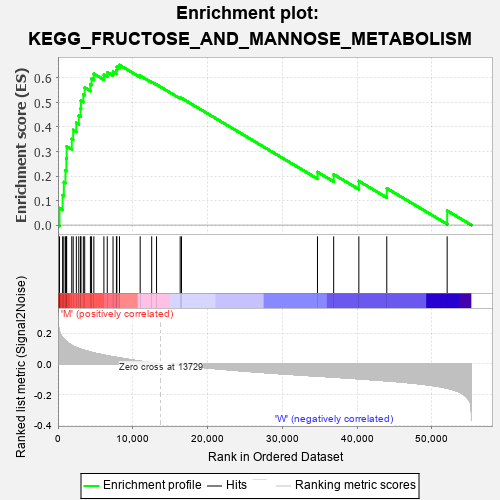
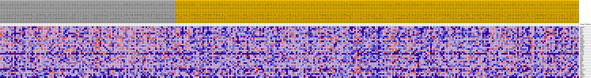
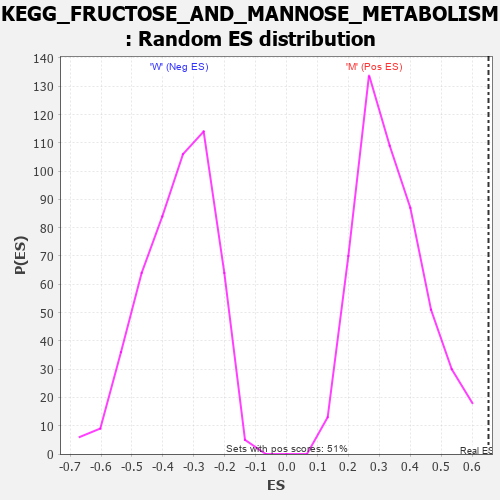

| Dataset | MUC16.MUC16.cls#M_versus_W.MUC16.cls#M_versus_W_repos |
| Phenotype | MUC16.cls#M_versus_W_repos |
| Upregulated in class | M |
| GeneSet | KEGG_FRUCTOSE_AND_MANNOSE_METABOLISM |
| Enrichment Score (ES) | 0.65271187 |
| Normalized Enrichment Score (NES) | 1.9228747 |
| Nominal p-value | 0.0 |
| FDR q-value | 0.04353714 |
| FWER p-Value | 0.132 |

| PROBE | DESCRIPTION (from dataset) | GENE SYMBOL | GENE_TITLE | RANK IN GENE LIST | RANK METRIC SCORE | RUNNING ES | CORE ENRICHMENT | |
|---|---|---|---|---|---|---|---|---|
| 1 | PFKFB2 | na | 205 | 0.209 | 0.0691 | Yes | ||
| 2 | HK2 | na | 616 | 0.172 | 0.1216 | Yes | ||
| 3 | TPI1 | na | 780 | 0.162 | 0.1751 | Yes | ||
| 4 | PFKP | na | 996 | 0.150 | 0.2235 | Yes | ||
| 5 | HK3 | na | 1124 | 0.145 | 0.2718 | Yes | ||
| 6 | ALDOA | na | 1160 | 0.143 | 0.3211 | Yes | ||
| 7 | ALDOC | na | 1840 | 0.121 | 0.3509 | Yes | ||
| 8 | PMM2 | na | 2031 | 0.116 | 0.3877 | Yes | ||
| 9 | MTMR2 | na | 2451 | 0.106 | 0.4172 | Yes | ||
| 10 | PFKFB4 | na | 2779 | 0.100 | 0.4463 | Yes | ||
| 11 | GMPPA | na | 3018 | 0.096 | 0.4755 | Yes | ||
| 12 | PFKM | na | 3068 | 0.095 | 0.5078 | Yes | ||
| 13 | PFKFB3 | na | 3387 | 0.091 | 0.5336 | Yes | ||
| 14 | GMPPB | na | 3571 | 0.088 | 0.5609 | Yes | ||
| 15 | SORD | na | 4334 | 0.077 | 0.5741 | Yes | ||
| 16 | MTMR6 | na | 4487 | 0.075 | 0.5976 | Yes | ||
| 17 | TSTA3 | na | 4794 | 0.071 | 0.6170 | Yes | ||
| 18 | ALDOB | na | 6137 | 0.057 | 0.6127 | Yes | ||
| 19 | FPGT | na | 6586 | 0.053 | 0.6229 | Yes | ||
| 20 | PFKL | na | 7358 | 0.046 | 0.6251 | Yes | ||
| 21 | GMDS | na | 7812 | 0.043 | 0.6318 | Yes | ||
| 22 | MTMR7 | na | 7870 | 0.042 | 0.6454 | Yes | ||
| 23 | KHK | na | 8223 | 0.039 | 0.6527 | Yes | ||
| 24 | HK1 | na | 10988 | 0.018 | 0.6089 | No | ||
| 25 | MTMR1 | na | 12526 | 0.008 | 0.5837 | No | ||
| 26 | PHPT1 | na | 13176 | 0.003 | 0.5731 | No | ||
| 27 | MPI | na | 16337 | -0.007 | 0.5182 | No | ||
| 28 | AKR1B10 | na | 16511 | -0.008 | 0.5178 | No | ||
| 29 | FBP1 | na | 34694 | -0.079 | 0.2161 | No | ||
| 30 | PMM1 | na | 36859 | -0.085 | 0.2067 | No | ||
| 31 | PFKFB1 | na | 40227 | -0.096 | 0.1793 | No | ||
| 32 | AKR1B1 | na | 43960 | -0.109 | 0.1499 | No | ||
| 33 | FBP2 | na | 52035 | -0.157 | 0.0585 | No |

